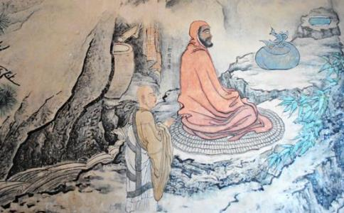

那个满脸络腮胡、环眼圆睁的菩提达摩，千里迢迢把
菩提达摩继续北上，他脚踩一根芦苇渡过长江，向北到达少林寺，并在此面壁
离开梁武帝后，
达摩祖师打断神光，向他提问：
“法师，你在干什么？”
“我正在
“为什么你要说法？”
“我在教导大众了脱
“哦？”达摩说，“具体怎么做呢？你所传讲的经典，纸是白的、字是黑的。这怎能让人了脱？”
怎样才能教导人们了却生死呢？神光法师无言以对、恼羞成怒，尽管天上的天女仍在散花，地面也在不断涌出金莲，他却勃然大怒，并用那沉重的铁
达摩祖师接着遇见了一只被囚禁在柳条笼中的鹦鹉。这只鸟儿比神光法师更有智慧，一眼就认出了禅宗初祖菩提达摩，它问：
“西方来的大师
教我办法
逃脱牢笼。”
虽然人们对达摩祖师有眼不识泰山，而这只鹦鹉却认出了他。听到鸟儿的呼救，达摩祖师悄声说出一条秘密计谋，来帮助鹦鹉脱身：
“想从笼中脱身
僵直两腿
紧闭双眼
用这个办法
从笼中脱身。”
鹦鹉聚精会神地听完后说：“好的，我懂了！”它双脚一挺、两眼一闭，静静地等待。当鸟儿的主人结束工作回家时，他总会先逗弄一会鸟，但这次看向鸟笼时，他吓坏了，差点儿就要泪奔。就算自己的儿子死了，也不会让他这么难过。拉开笼子的门，他小心翼翼地捧起那只鸟，鸟儿安静地躺在他手心里，一动也不动，身体尚留有余温。主人难以置信地盯着那小小的身体，翻来覆去地左瞧瞧右看看，但小鸟连一丝颤抖也没有。慢慢地，他松开了手…… 扑噜噜！说时迟那时快，鸟儿挣脱了他的手，远走高飞！那就是一只鹦鹉怎么重获自由的故事。
菩提达摩离开神光法师后不久，亡者之主——阎王派遣无常鬼给神光送来一张死亡传票。神光对自己尚未脱离生死轮回大感惊讶，他求教阎王，在中土是否真的有人可以不受其勾召。答复很快被带回，只有那位被神光打落牙齿的印度和尚。于是神光向阎王申请暂缓执行，以便追寻菩提达摩，向他学习如何免于死亡。
达摩祖师教导人们开悟，以
如果问，达摩祖师开出的开悟（一劳永逸地脱离生死轮回）处方是什么？或者神秘主义一点，如果想永远逃离阎王的勾召，达摩祖师有何良策？对梁武帝而言，达摩祖师有意引领他放下所有功德，看破对王位、对成为达摩祖师大施主的执著，舍俗出家并全身心地投入
神光早已出家，然而他也沉湎于累积巨大功德的欢悦中。达摩祖师给他开具的处方，是一堂关于谦下恭敬的大课：神光跪在达摩祖师前长达九年，而祖师则盯着墙，完全无视其存在。直到神光砍下自己的手臂，来表明他重视法远胜于自己的身体时，达摩祖师才答应教导他。接下来，就在神光诉说自己的苦痛，并请求达摩祖师安抚他的心灵时，他终于认识到自性远离肉体的物质存在和心相续，得到了祖师的心印传承。
然而对鹦鹉，达摩祖师却给出了很特别的指导，告诉它怎样从这个物质的肉体存在及相应的必死